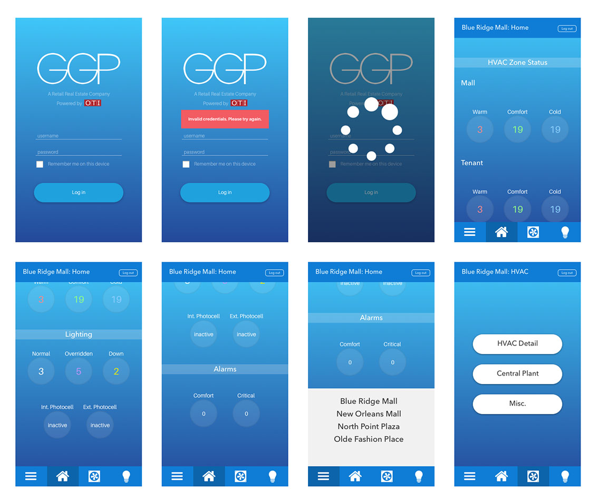
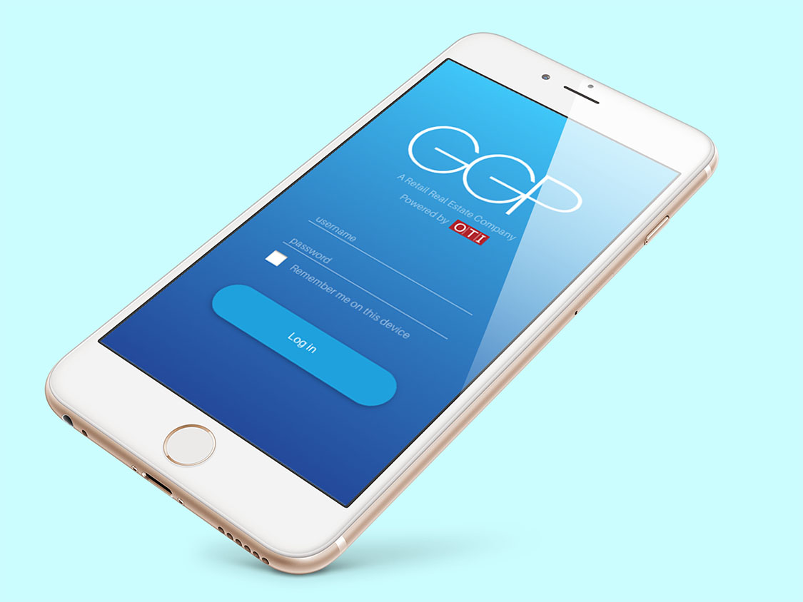

Project Overview
One of our largest clients, GGP, is a retail real estate company who owns over a hundred properties in the states. Controlco was contracted to integrate their systems and provide a UI for their facilities to operate. For GGP, our service package includes a mobile version of their IoT in-browser application. While we already had a mobile version in place, I was asked to redesign it and bring it up to today's standards. The problem with the interface they were using was that it was a stripped down version of the desktop application but wasn't optimized. The text was cut off and misaligned, and tables seemed like they were infinitely nested– it was hard to drill down into an element. It wasn't as intuitive as modern apps.
Methods
There were several things that I wanted to improve with this project.
- Colors needed to be updated to reflect how our new design standards.
- Text wasn't optimized. Things spilled out of their containers.
- The equipment summary section was difficult to use as one would have to tap to delve into an element while staying on one screen.
- It was hard to tell that it was even a mobile app. It looked like the desktop version but on a smaller screen.
The first thing for me to do was to create a mockup depicting the flow between the screens. We interviewed data modelers and the clients directly to figure out what data we can strip down. Because of obvious reasons, we chose not to show the equipment graphics and floorplans like we do on the desktop version. Unlike its desktop counterpart, this mobile app is meant for operations team to look at data only. Users cannot change settings through the mobile interface.

Once users successfully log in, they can choose between different malls (if they have the privilege to access) and see how the facility is operating.

A few screens of the mobile application.

Blue is the color of technology while gradients represent something complex yet simple at the same time. It was perfect for this app, especially because the desktop version of the app is already using some shade of blue.
The Takeaway
This was the first app design I worked on at Controlco. I was given very little direction in where to take the design, but having a lot of first hand experience using mobile apps gave me some leverage. Working in the IoT big data industry is already difficult with the shear amount of content. It was even more difficult trying to fit data on a smaller device, but in the end, I learned that these methods can be applied to almost every time I work with UX. As a result of this project, I became a better collaborator with people outside of my team. It was a cross-functional effort between different stakeholders. In the end, the VP of Operations really liked the upgrade and thought that it represented our company well. It would eventually become the new template for the mobile apps.
